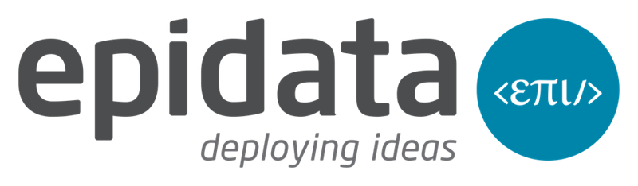
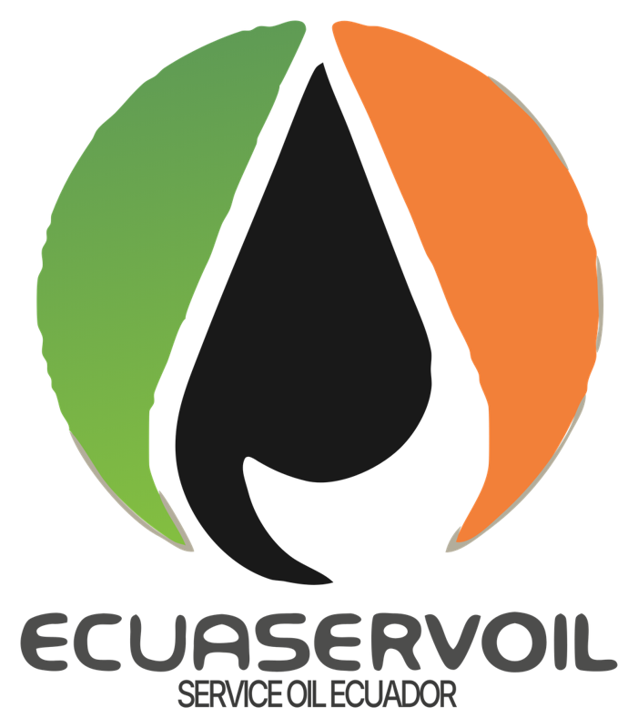
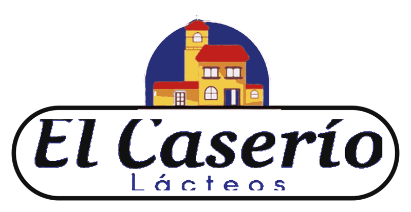
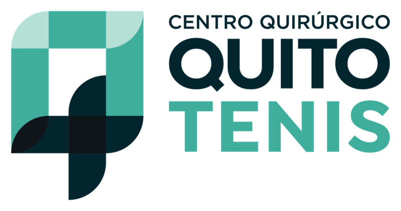
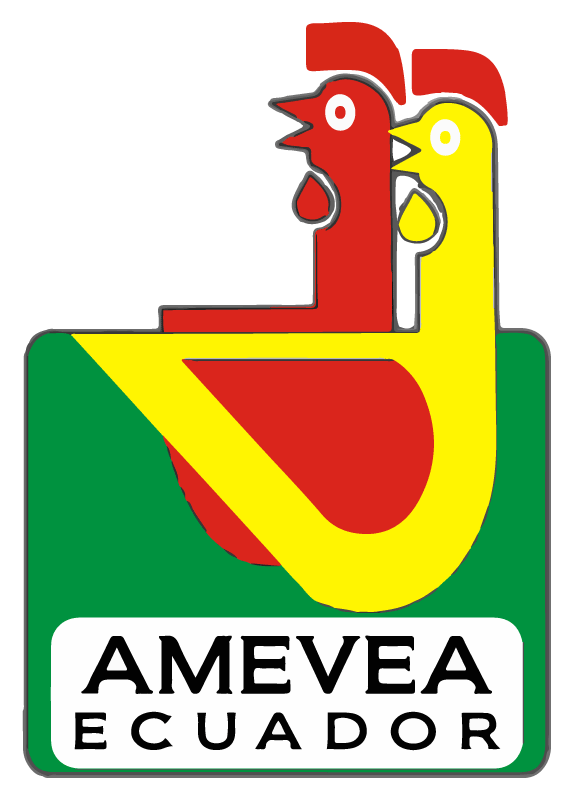
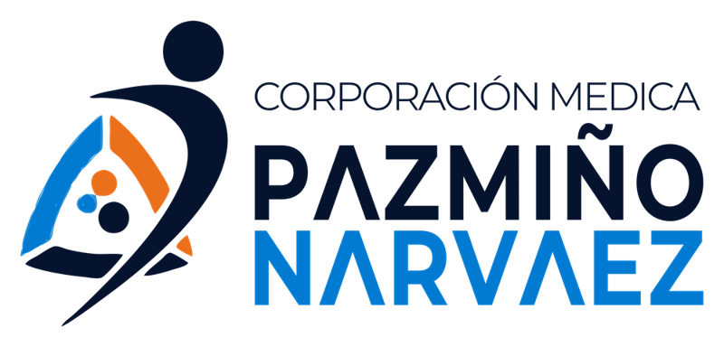
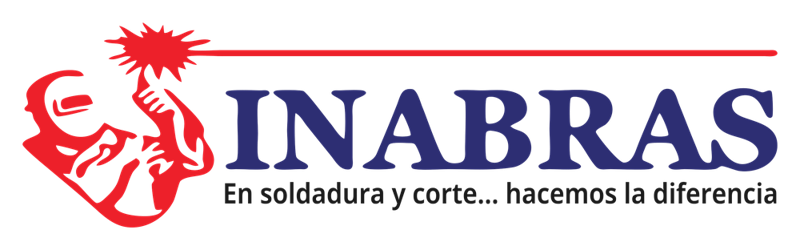
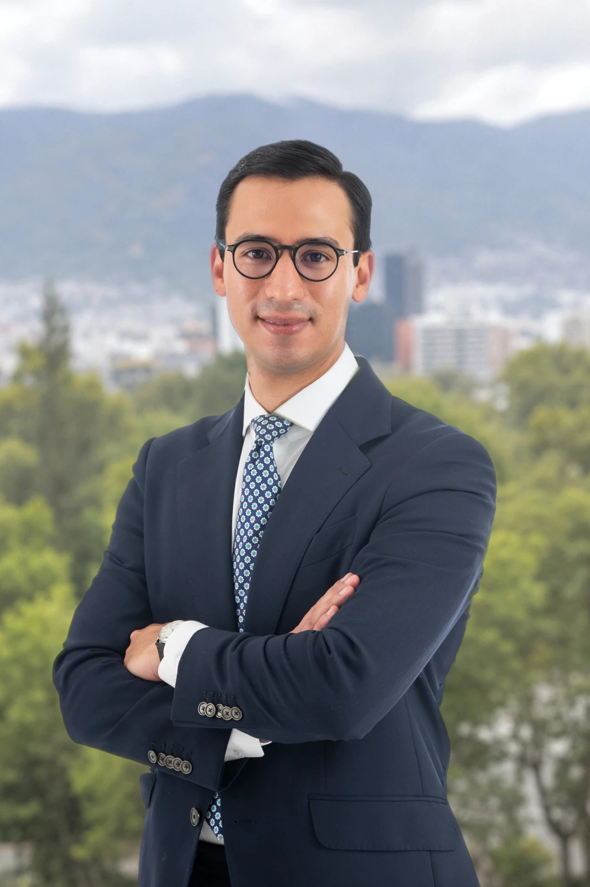
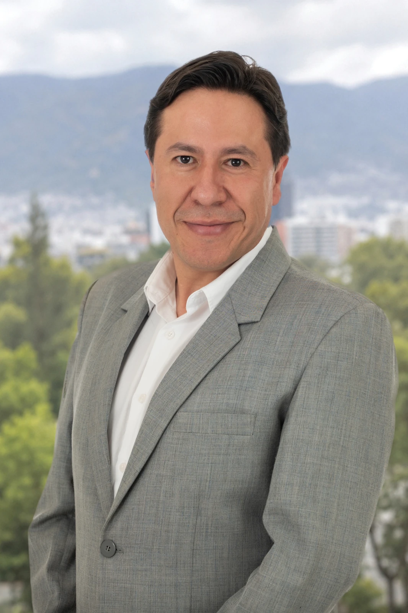

Firma jurídica empresarial · Quito · Ecuador
Abogados para
empresas en Ecuador
Asesoramos a empresas nacionales y extranjeras en derecho corporativo, protección de datos personales y establecimiento en Ecuador, con un equipo jurídico, contable y tecnológico.

Compromiso
Respuesta el mismo día hábil
Cifras actualizadas a octubre de 2026
250+
empresas y organizaciones asesoradas
130+
implementaciones de la LOPDP
63+
empresas con nuestro servicio de Delegado de Protección de Datos
20+
compañías con capital extranjero constituidas
Empresas y organizaciones que han confiado en TempoLegal
Conozca nuestra experiencia en distintos sectores.
Ver casos de éxito →
















Servicios para empresas
Servicios legales para empresas
en Ecuador.
Asesoría para crear, operar y desarrollar su empresa, con apoyo jurídico, contable y de cumplimiento.
Contratos, juntas, reformas de estatutos, acuerdos entre socios y organización de grupos empresariales, con asesoría puntual o continua.
Cómo podemos acompañarle
- Estatutos y reformas
- Actas y aumentos de capital
- Contratos y acuerdos de socios
Definimos con usted el alcance, los entregables y los honorarios antes de comenzar.
Implementación de la LOPDP, delegado de protección de datos externo (DPD) y auditoría jurídica y técnica, según lo que necesite su organización.
DPD externo desde USD 95 + IVA al mes
Cómo podemos acompañarle
- Diagnóstico y documentación
- Auditoría legal y técnica
- Delegado externo y seguimiento
Definimos con usted el alcance, los entregables y los honorarios antes de comenzar.
Soft landing en Ecuador: estructura societaria, constitución o sucursal, representación, domicilio y contabilidad coordinados desde Quito.
Cómo podemos acompañarle
- Constitución y establecimiento
- Representación legal y domicilio fiscal
- Coordinación societaria y contable
Definimos con usted el alcance, los entregables y los honorarios antes de comenzar.
Contabilidad, declaraciones al SRI, estados financieros y seguimiento de obligaciones societarias, coordinados con el criterio jurídico.
Cómo podemos acompañarle
- Contabilidad y estados financieros
- Obligaciones ante SRI y Superintendencia
- Cumplimiento y acompañamiento recurrente
Definimos con usted el alcance, los entregables y los honorarios antes de comenzar.
Ver más serviciosVer menos servicios
Constitución de SAS con revisión de estatutos, nombramientos, RUC y configuración del facturador electrónico del SRI.
Desde USD 140 + IVA
Un accionista persona natural. Firma electrónica aparte si la necesita.
Cómo podemos acompañarle
- Diseño de estatutos
- Nombramientos y registros
- RUC y acompañamiento inicial
Definimos con usted el alcance, los entregables y los honorarios antes de comenzar.
Contratos de trabajo, reglamentos internos, terminaciones y gestión de controversias laborales.
Cómo podemos acompañarle
- Contratos y reglamentos internos
- Finiquitos y gestión laboral
- Prevención y defensa en conflictos
Definimos con usted el alcance, los entregables y los honorarios antes de comenzar.
Registro de marcas ante el SENADI y protección de los activos que distinguen a su empresa.
Cómo podemos acompañarle
- Búsqueda y registro de marcas
- Software y derechos de autor
- Defensa y seguimiento ante SENADI
Definimos con usted el alcance, los entregables y los honorarios antes de comenzar.
Análisis del caso, gestión extrajudicial, negociación y representación en controversias empresariales.
Cómo podemos acompañarle
- Análisis del caso y documentación
- Gestión extrajudicial y negociación
- Representación en procesos judiciales
Definimos con usted el alcance, los entregables y los honorarios antes de comenzar.
Poderes, documentación y coordinación de los actos y registros que necesita su empresa.
Cómo podemos acompañarle
- Poderes y documentación
- Actos y registros societarios
- Coordinación de trámites
Definimos con usted el alcance, los entregables y los honorarios antes de comenzar.
Cómo abordamos su operación
Lo jurídico, lo contable
y lo tecnológico
en la misma conversación.
Una decisión societaria tiene efectos tributarios. La protección de datos exige revisar procesos y sistemas. Coordinamos las especialidades que su asunto necesita.
- Criterio jurídico
- Contratos, estructura societaria, relaciones laborales y cumplimiento.
- Soporte contable y tributario
- Información y obligaciones de la empresa conectadas con sus decisiones legales.
- Revisión tecnológica
- Abogados e ingenieros para evaluar la gestión de datos y sus medidas de seguridad.
Cobertura
Soft landing en Ecuador:
su equipo local desde Quito.
Constituir una compañía es el inicio. Coordinamos representación legal, domicilio, contabilidad, contratación y cumplimiento para acompañar su operación en Ecuador.
Este acompañamiento se conoce como soft landing. El alcance se acuerda según su estructura y sus necesidades; los trámites bancarios y otras autorizaciones dependen de las entidades competentes.
9+
países de origen de nuestros clientes
20+
compañías con capital extranjero constituidas
Sectores Salud · Educación · Tecnología · Industria · Logística · Comercio y servicios
Planificar mi operación en EcuadorPaíses de origen de nuestros clientes
- MéxicoCiudad de México
- GuatemalaCiudad de Guatemala
- Costa RicaSan José
- EE. UU.Miami
- ColombiaBogotá
- PerúLima
- ArgentinaBuenos Aires
- EspañaMadrid
- IsraelTel Aviv
Experiencia en la práctica
Tres necesidades.
Trabajo concreto.
Grupos empresariales, operaciones extranjeras e instituciones de salud. El alcance de cada caso responde a su contexto.
Testimonios
Lo que dicen nuestros clientes
En GMA tenemos varias empresas y una operación logística que no se detiene. Necesitamos una asesoría legal que entienda esa realidad y no se quede solo en lo teórico.
Leer testimonio completoMostrar menos
TempoLegal nos acompaña desde hace años en asuntos laborales, societarios, contractuales y de protección de datos personales. Conocen cómo funciona el grupo, así que cuando surge un problema podemos ir directamente a lo importante.
Lo que más valoro es que nos ayuden a prevenir riesgos y nos den alternativas claras para resolver situaciones concretas. Para un grupo empresarial como el nuestro, contar con abogados que conocen la operación y están presentes cuando se los necesita marca una diferencia.
En FLP hay temas que requieren una respuesta inmediata y otros que necesitan seguimiento durante meses. Para mí hace una gran diferencia contar con un equipo que ya conoce nuestras empresas.
Leer testimonio completoMostrar menos
TempoLegal nos apoya en asuntos laborales, societarios y contractuales y, además, lleva la contabilidad de FLP Holding Ecuador. Poder coordinar la parte jurídica y contable con un mismo equipo nos facilita mucho el trabajo.
No tenemos que explicar desde cero la historia de cada compañía ni buscar a quién acudir según el problema. Sabemos con quién hablar y podemos dar continuidad a los asuntos pendientes. Eso, en el día a día de una empresa, vale mucho.
Cuando decidimos desarrollar nuestras actividades en Ecuador, necesitábamos mucho más que constituir una compañía. Había que organizar la estructura societaria, la representación local y los temas contables, tributarios y de cumplimiento.
Leer testimonio completoMostrar menos
TempoLegal nos ha acompañado en la estructuración de nuestras empresas y en esas necesidades, incluida la protección de datos personales. Para nosotros, que coordinamos negocios en distintos países, es una ventaja tener un equipo local que conoce nuestra operación y al que podemos acudir directamente.
En particular, hemos confiado en Juan Alberto Gómez para asumir la representación legal de compañías de nuestro grupo en Ecuador. Para mí, esa responsabilidad solo se delega cuando existe plena confianza.
Esa combinación de asesoría jurídica y apoyo práctico nos ha facilitado trabajar en Ecuador. Es el tipo de acompañamiento que recomendaría a otras empresas que quieren establecerse y operar en el país.
En los negocios hay decisiones que no se pueden tomar a ciegas. Cuando consulto a un abogado, necesito que me explique bien cuáles son las opciones y los riesgos.
Leer testimonio completoMostrar menos
Con Juan Alberto Gómez y el equipo de TempoLegal hemos trabajado en contratos y asuntos societarios. Lo que aprecio es poder plantear un problema con confianza y recibir una opinión clara, pensada para lo que realmente necesita la empresa.
Esa relación se construye con el tiempo y con el trabajo, no con discursos. Por eso valoro contar con Juan Alberto y su equipo cuando necesito respaldo jurídico.
Trabajar con Tempo Legal fue una decisión positiva para mi empresa y mis necesidades personales. He recibido una asesoría clara y cercana, el equipo entendió mis necesidades, me explicó los pasos del proceso y estuvo disponible para resolver mis inquietudes.
Leer testimonio completoMostrar menos
Más allá del conocimiento jurídico, valoré especialmente su compromiso y la atención personalizada durante todo el proceso. Así pudimos avanzar con seguridad y enfocarnos en nuestras obligaciones, sabiendo que los aspectos legales estaban en buenas manos. Sin duda, recomendaría a Tempo Legal. De hecho trabajo y seguiré trabajando con ellos
Testimonios de nuestros clientes.
Equipo
Responsables de cada área
Conozca a quienes coordinan las principales áreas de la firma. TempoLegal integra asesoría jurídica, contable y tecnológica.
Conozca nuestro equipo
Juan Alberto Gómez
Abogado
Socio fundador
Especialista en soft landing y empresas extranjeras. Derecho corporativo · Protección de datos
Ver perfilDaniela Barahona
Abogada · Magíster
Abogada senior
Derecho corporativo · Laboral
Ver perfilEmillie Donoso
Abogada · Magíster
Abogada senior
Protección de datos · Cumplimiento normativo
Ver perfil
Rolando Valencia
Ingeniero
Coordinador de Servicios Financieros
Finanzas · Administración
Gabriel Calvopiña
Ingeniero · Magíster
Coordinador de Servicios Contables y Tributarios
Contabilidad · Tributario
Ver perfilEspecialistas en tecnología y seguridad de datos
Un equipo informático que complementa el acompañamiento jurídico.
Cómo trabajamos
Una ruta clara
desde el inicio.
Primero entendemos la necesidad. Después definimos qué trabajo se requiere y cómo lo ejecutaremos.
-
Entendemos
Nos cuenta el contexto de su empresa. Respondemos el mismo día hábil y coordinamos la información necesaria para orientar el siguiente paso.
-
Definimos
Acordamos alcance, entregables, tiempos y honorarios.
-
Ejecutamos
Desarrollamos el servicio y coordinamos con su equipo la información necesaria.
-
Acompañamos
Mantenemos seguimiento y soporte cuando el servicio lo requiere.
Lecturas para decidir mejor
Guías legales para empresas.
Publicaciones sobre derecho corporativo, empresas extranjeras y protección de datos.
Gobierno corporativo
Holding familiar en Ecuador: cuándo conviene y cómo estructurarlo
Criterios para ordenar el control del grupo, separar actividades y preparar la sucesión.
Leer artículoPerspectivas para su empresa
Empresa extranjera en Ecuador: los primeros 90 días
Aspectos societarios, contables, laborales y de cumplimiento para planificar la operación.
Leer artículo¿Su empresa necesita un DPD en 2026?
Criterios de obligatoriedad y preguntas para revisar la situación de su organización.
Leer artículoConversemos sobre su empresa
Cuéntenos
qué necesita.
Comparta el contexto y el servicio que le interesa. Le respondemos el mismo día hábil para conocer su necesidad y coordinar el siguiente paso.
Orientación inicial sin costo. Atención presencial en Quito y remota para empresas de Ecuador y del exterior.
Hablar por WhatsApp ↗
La consulta se prepara en su dispositivo para que la revise y continúe por WhatsApp o correo. No se envía automáticamente.